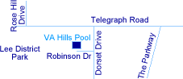

Location
The Virginia Hills pool is located in the Virginia Hills development, at 6500 Robinson Drive. Robinson is a short street just off Dorset Drive. Dorset Drive runs between Telegraph Road and Berkshire Drive within the community, crossing The Parkway, a major road through the Virginia Hills community running between Telegraph Road and South Kings Highway.
Click here for a printable map and directions.

Directions
From the Washington Beltway
Coming from either the direction of the Springfield mixing bowl or the Wilson Bridge, exit onto the Telegraph Road heading south. Proceed about two miles until Dorset Drive on your left. Turn left onto Dorset Drive, proceed up the hill. Beyond the crest of the hill look for Robinson Drive on the right. Turn right onto Robinson and take the first right into the pool parking lot.
From the Richmond Highway
Coming from either direction, south or north, turn onto Memorial Drive (easily recognized by a traffic light and a Goodyear store on the corner, with the Beacon Hill Shopping Center's Giant Food store in view behind it). Follow Memorial until you reach the first stop light, then turn left onto South Kings Highway. Proceed through the next stop light and bear right at the third light. Turn right onto The Parkway and then take the first left onto Dorset Drive. The second left along Dorset Drive is Robinson Drive, where the pool is located. Enter the first entrance to the pool's parking lot.
From the Springfield Franconia Parkway
The Springfield-Franconia Parkway, traveling in the east and southerly direction, ends at Beulah Street, approximately one mile past Springfield Mall. However, continue through the traffic light at Beulah onto Manchester Lakes Boulevard a short distance until you will see Hayfield Road on the right (there is a short ramp). Turn right onto Hayfield Road and proceed to the second traffic light, which is at Telegraph Road. Hayfield Shopping Center will be on the left and Hayfield Secondary School on the right. Turn left onto Telegraph Road and proceed north through three traffic lights (the third at the entrance to Lee District Park). After the third light, the third right is Dorset Drive (nearly directly across from the small commercial electric office). Turn onto Dorset Drive and proceed up the hill. Beyond the crest of the hill, look for Robinson Drive on your right and turn into it.
Parking
The pool has a parking lot which normally can hold enough cars for regular pool patrons. For swim meets, the parking lot normally fills up and parking along one side of Robinson and Dorsett are used. Please do not park on both sides or block driveways. For major swim meets such as divisionals and relay carnivals, we suggest using as overflow parking either the lot behind the old Virginia Hills School, which is located on Diana Lane off of Dorset Drive a short distance from the pool. Alternatively, you may park in the lot between the ball fields at Lee District Park. From there, walk down the gravel path away from the main park building, past the snack bar/toilet building at the far end of the parking lot. The gravel path leads to Robinson Drive and the pool parking lot.
Phone
The phone in the guard shack: 703-960-9717.